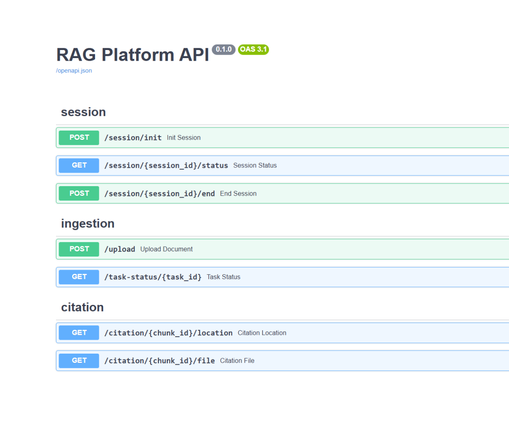
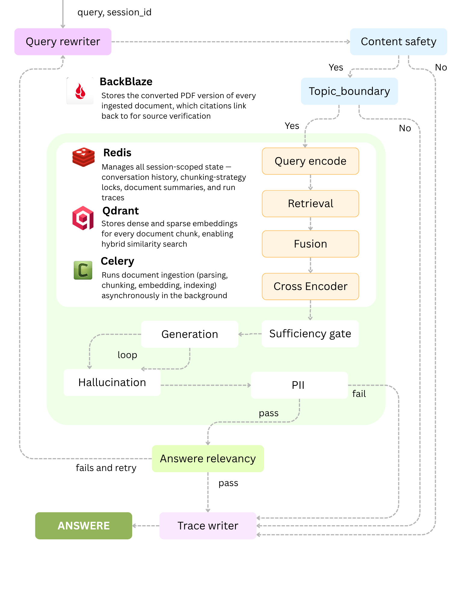

Production-grade Hybrid RAG platform: BM25 + dense retrieval fused via RRF, cross-encoder reranking, LangGraph guardrails (hallucination, PII, topic-boundary), citation-grounded answers. Built on FastAPI, Celery, Redis, Qdrant.
Github Link →
When a new employee joins a large organization, there's no single system they can turn to for answers about how the company actually works — policies, procedures, product details, internal rules — without physically tracking down a colleague or manager who happens to know. Enterprises need a system that acts as a complete, always-available knowledge base of the company: any employee, at any level, should be able to ask a question in plain language and receive a grounded, cited answer — not a guess, not a hallucination — with the ability to jump directly to the exact source document and verify it themselves. This requires more than a simple chatbot.
Built a hybrid-retrieval RAG platform that lets any employee query the company's documents directly and get a grounded, cited answer — no need to track down a colleague. Hybrid search (BM25 + dense vectors, fused via Reciprocal Rank Fusion) with cross-encoder reranking finds the most relevant passages regardless of exact wording. A multi-stage LangGraph guardrail pipeline checks safety and topic relevance before retrieval, and verifies answers against hallucination after generation, keeping responses grounded in real content. Every answer includes a citation linking back to the exact source document, so employees can independently verify it.
Grounded, cited answers with source verification — every response links directly back to the exact document and page it came from, letting employees independently verify accuracy instead of trusting the answer blindly. This is the core trust mechanism the whole system is built around.
Hybrid retrieval (BM25 + dense vectors, fused via RRF) — combines exact keyword matching with semantic understanding, so the system finds the right passage whether the employee uses precise terminology or a natural paraphrase.
Multi-stage guardrail pipeline — safety and topic-boundary checks before retrieval, hallucination and answer-relevance verification after generation, with a shared bounded retry budget. This is what actually prevents confidently-wrong answers, not just a disclaimer.
Cross-encoder reranking — a second-pass precision filter over the top retrieval candidates, ensuring the most relevant chunks reach the LLM instead of just the top-scoring-but-imprecise ones.
Session-scoped document upload with isolated retrieval — employees can upload their own files and ask questions against them in the same conversation, kept fully separate from every other user's session and from the shared corpus.
Configurable chunking strategies (fixed, sentence-aware, semantic, hierarchical) — lets the system be tuned for different document structures and compared empirically, rather than locked into one fixed approach.
One Time Chat Model — session expires after 30 min if no interaction happens; this is the type of model best for companies providing such a system for their employees.
Architecture & Flow — 8 Points
1. Session Initialization. On app load, the frontend calls the backend to generate a session_id — no login required. This ID scopes everything the user does: their uploaded documents, conversation history, and eventual cleanup, all tied to one ephemeral session.
2. Document Ingestion (Async via Celery). When a user uploads a file, FastAPI validates it and hands off to a Celery worker. The worker converts the file to PDF (LibreOffice for docx/pptx, Pandoc for html/md), uploads the converted PDF to Backblaze object storage, and extracts position-tagged text elements — all while the API responds immediately without blocking.
3. Chunking, Embedding & Indexing. The extracted text is split using the session's locked chunking strategy (fixed, sentence-aware, semantic, or hierarchical), embedded into dense (semantic) and sparse (BM25-style) vectors using fastembed, and written into Qdrant — either the shared corpus collection or the session's own isolated collection.
4. Query Intake & Rewriting. When a user asks a question, the query first passes through a rewriting step that resolves follow-ups and pronouns using recent conversation history pulled from Redis, producing a self-contained, standalone query.
5. Pre-Retrieval Guardrails. Before any retrieval happens, the rewritten query passes through a safety check (blocks prompt injection, unsafe requests) and a topic-boundary check (confirms the query is actually answerable from the shared corpus or the session's own uploaded documents).
6. Hybrid Retrieval & Reranking. The query is embedded and searched against both the shared corpus and the session's collection using hybrid search (sparse + dense, fused via Reciprocal Rank Fusion within each collection, then fused again across both). A cross-encoder reranks the top candidates, and a sufficiency gate filters out low-confidence results before generation.
7. Generation & Post-Generation Guardrails. The LLM generates an answer grounded in the retrieved context. It's then checked for hallucination (faithfulness to context) and answer relevance, with a shared, bounded retry loop that re-generates if either check fails. PII redaction runs on the final answer, citation-aware so a user's own uploaded content isn't unnecessarily redacted.
8. Streamed Response & Citation Verification. Clicking a citation opens the exact source PDF at the correct page. A full execution trace is available per query, and the entire session — documents, history, vectors — is deleted on timeout or explicit end.

Stores dense and sparse embeddings for every document chunk, enabling hybrid similarity search fused via Reciprocal Rank Fusion. Maintains a separate collection per session for uploaded documents, isolated from the shared corpus.
Manages all session-scoped state — conversation history, chunking-strategy locks, document summaries, and run traces — with automatic expiry tied to session inactivity. Also serves as the message broker and result backend for Celery.
Stores the converted PDF version of every ingested document, which citations link back to for source verification. Provides the byte-level file content served through the scoped, access-checked citation viewer endpoints.
Runs document ingestion (parsing, chunking, embedding, indexing) asynchronously in the background, so file uploads return immediately instead of blocking the API. Also drives the periodic session-sweep job that tears down expired sessions and their associated data.